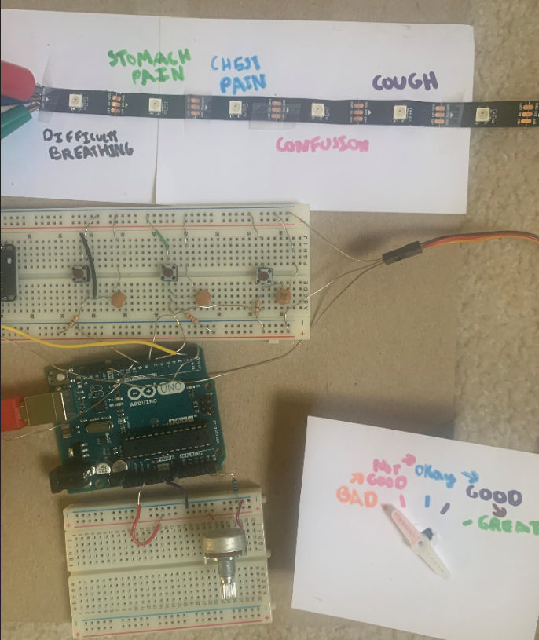

My Final Project
For my final project, I made a device to help COVID-19 patients autonomously report changes in how they are feeling about five common comorbidities of COVID-19. The goal of this device, named Personal Patient Monitors, is to 1) help remove some of the strain from doctors and nurses in busy hospitals and ERs, and 2) collect more frequent, real-time data, and save this data to a centralized datapage and webpage for additional research.
I'll just describe the final project in this page, but for detailed documentation on my hardware and software design process and implementation, check out this Process
To start, turn your volume on and check out this video I put together showing the total final product of Personal Patient Monitors and all its features:
Now, let's talk a bit more about this final project in words:
The reason that I decided to work on these kinds of devices for my final project is because I wanted to somehow help with the COVID-19 Epidemic. I knew that many hospitals are currently very overwhelmed by patients, especially in high risk areas such as New York. I live in Northern NJ, relatively close to some of these areas, and I wanted to a create a device that can take some of the strain off of the nurses and doctors on the front lines.
I thought that one way to free up time for doctors and nurses is by having a device that patients can use themselves to input how they are feeling about various systems of their body that may be affected by coronavirus. Having this data be inputted to a central database could perhaps help doctors and nurses more easily and more frequently collect data from patients.
Also, hospitals that are so inundated in cases maybe don't have the time to study data extensively, so having this data in a real-time, detailed database and on a website can perhaps help with outsourcing data analysis as well. This may help us better understand the onset of comorbidities of coronavirus, and better treat these and account for these in the future.
I had to next decide what my project would actually allow patients to input data on. I knew that I wanted to collect data on common comorbidities of COVID-19, or things that tend to go wrong during its onset. Eventually, after doing some research, based on how common they are and how frequently they can change, I settled on five comorbidities to test: Difficulty Breathing, Stomach Pain, Chest Pain, Confusion, and Coughing.
I wanted this device to be easy to use by users, and buildable using simple components I had in my arduino kit. My vision for this device would be that a user could use buttons to navigate through different comorbidities. After they picked a comorbidity, I wanted them to be able to turn some sort of dial to indicate how well they are doing with this comorbidity, on a scale from very bad to very good. Finally, I wanted there to be an "Enter" or "Commit" button that would update some database with this value when pressed.
I realized that using buttons and an LED strip would make most sense for navigating through comorbidities, and perhaps using a potentiometer and/or servomotor to indicate how they are doing. I explain the specifics of how I designed and built this circuit in the Process page.
Here is a full picture of the user interface:
Finally, I wanted this information to display somewhere centralized for the hospital and perhaps potential public data analysts to access it. I decided that using a firebase database to store the information and then displaying this information on a table on a webpage is maybe the simplest way to do this.
Check out the webpage here
Please check out my fully documented process page here
Thanks so much for checking out my page! Please feel free to contact me with questions, comments, and suggestions! :)